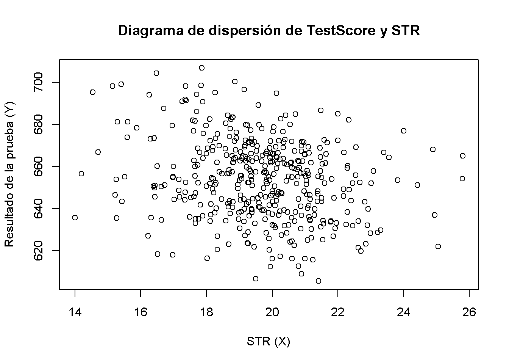
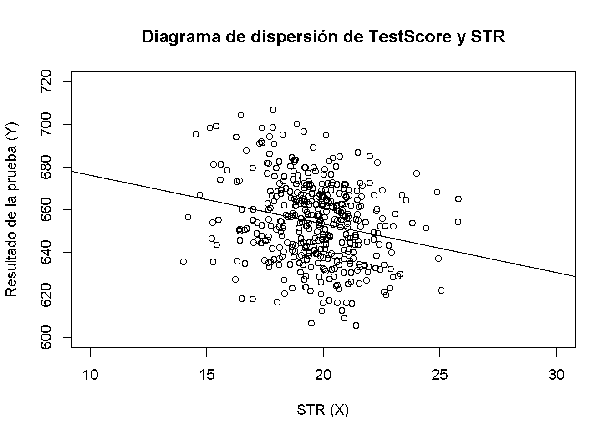

5.2 Estimación de los coeficientes del modelo de regresión lineal
En la práctica, se desconocen la intersección \(\beta_0\) y la pendiente \(\beta_1\) de la línea de regresión de la población. Por lo tanto, se deben emplear datos para estimar ambos parámetros desconocidos. A continuación, se utilizará un ejemplo del mundo real para demostrar cómo se logra esto. Se quieren relacionar los resultados de las pruebas con la proporción de alumnos por maestro medida en las escuelas de California. El puntaje de la prueba es el promedio de todo el distrito de puntajes de lectura y matemáticas para los estudiantes de quinto grado. Nuevamente, el tamaño de la clase se mide como el número de estudiantes dividido por el número de maestros (la proporción de estudiantes por maestro). En cuanto a los datos, el conjunto de datos de las escuelas de California (CASchools) viene con un paquete R llamado AER, un acrónimo de Econometría aplicada con R (Christian Kleiber and Zeileis 2020). Después de instalar el paquete con install.packages(“AER”) y adjuntarlo con library(AER) el conjunto de datos se puede cargar usando la función data().
## # instalar el paquete AER (una vez)
## install.packages("AER")
##
## # cargar el paquete AER
library(AER)
# cargar el conjunto de datos en el espacio de trabajo
data(CASchools)Una vez que se ha instalado un paquete, está disponible para su uso en otras ocasiones cuando se invoca con library() — ¡no es necesario ejecutar install.packages() de nuevo!
Es interesante saber con qué tipo de objeto se está tratando. En consecuencia, class() devuelve la clase de un objeto. Dependiendo de la clase de un objeto, algunas funciones (por ejemplo, plot() y summary()) se comportan de manera diferente.
Comprobar la clase del objeto CASchools.
class(CASchools)
#> [1] "data.frame"Resulta que CASchools es de la clase data.frame, que es un formato conveniente para trabajar, especialmente para realizar análisis de regresión.
Con la ayuda de head() se obtiene una primera descripción general de los datos. Esta función muestra solo las primeras 6 filas del conjunto de datos, lo que evita una salida de consola sobrecargada.
head(CASchools)
#> district school county grades students teachers
#> 1 75119 Sunol Glen Unified Alameda KK-08 195 10.90
#> 2 61499 Manzanita Elementary Butte KK-08 240 11.15
#> 3 61549 Thermalito Union Elementary Butte KK-08 1550 82.90
#> 4 61457 Golden Feather Union Elementary Butte KK-08 243 14.00
#> 5 61523 Palermo Union Elementary Butte KK-08 1335 71.50
#> 6 62042 Burrel Union Elementary Fresno KK-08 137 6.40
#> calworks lunch computer expenditure income english read math
#> 1 0.5102 2.0408 67 6384.911 22.690001 0.000000 691.6 690.0
#> 2 15.4167 47.9167 101 5099.381 9.824000 4.583333 660.5 661.9
#> 3 55.0323 76.3226 169 5501.955 8.978000 30.000002 636.3 650.9
#> 4 36.4754 77.0492 85 7101.831 8.978000 0.000000 651.9 643.5
#> 5 33.1086 78.4270 171 5235.988 9.080333 13.857677 641.8 639.9
#> 6 12.3188 86.9565 25 5580.147 10.415000 12.408759 605.7 605.4Se encuentra que el conjunto de datos consta de muchas variables y que la mayoría de ellas son numéricas.
Por cierto: Una alternativa a class() y head() es str() que se deduce de la palabra ‘estructura’ en inglés y ofrece una descripción general completa del objeto. ¡Intenténtelo!
Volviendo a CASchools, las dos variables que interesan (es decir, el puntaje promedio de la prueba y la proporción alumno-maestro) no están incluidas. Sin embargo, es posible calcular ambos a partir de los datos proporcionados. Para obtener las proporciones de estudiantes por maestro, simplemente se divide el número de estudiantes por el número de maestros. La puntuación media de la prueba es la media aritmética de la puntuación de la prueba de lectura y la puntuación de la prueba de matemáticas. El siguiente fragmento de código muestra cómo se pueden construir las dos variables como vectores y cómo se añaden a CASchools.
# calcular STR y agregarlo a CASchools
CASchools$STR <- CASchools$students/CASchools$teachers
# calcular TestScore y añadirlo a CASchools
CASchools$score <- (CASchools$read + CASchools$math)/2 Si se ejecuta head(CASchools) nuevamente, se encontrarían las dos variables de interés como columnas adicionales llamadas STR y score (¡marque esto!).
Resulta necesario hablar de la distribución de los puntajes de las pruebas y la proporción de alumnos por maestro. Existen varias funciones que pueden usarse para producir dichos resultados, por ejemplo:
mean() (calcula la media aritmética de los números proporcionados),
sd() (calcula la desviación estándar de la muestra),
cuantile() (devuelve un vector de los cuantiles de muestra especificados para los datos).
El siguiente fragmento de código muestra cómo lograr esto. Primero, se calculan las estadísticas de resumen en las columnas STR y score de CASchools. Para obtener un buen resultado, recopilando las medidas en un data.frame llamado DistributionSummary.
# calcular promedios de muestra de STR y score
avg_STR <- mean(CASchools$STR)
avg_score <- mean(CASchools$score)
# calcular las desviaciones estándar de la muestra de STR y score
sd_STR <- sd(CASchools$STR)
sd_score <- sd(CASchools$score)
# configurar un vector de percentiles y calcular los cuantiles
quantiles <- c(0.10, 0.25, 0.4, 0.5, 0.6, 0.75, 0.9)
quant_STR <- quantile(CASchools$STR, quantiles)
quant_score <- quantile(CASchools$score, quantiles)
# recopilar todo en un marco de datos (data.frame)
DistributionSummary <- data.frame(Average = c(avg_STR, avg_score),
StandardDeviation = c(sd_STR, sd_score),
quantile = rbind(quant_STR, quant_score))
# imprimir el resumen en la consola
DistributionSummary
#> Average StandardDeviation quantile.10. quantile.25. quantile.40.
#> quant_STR 19.64043 1.891812 17.3486 18.58236 19.26618
#> quant_score 654.15655 19.053347 630.3950 640.05000 649.06999
#> quantile.50. quantile.60. quantile.75. quantile.90.
#> quant_STR 19.72321 20.0783 20.87181 21.86741
#> quant_score 654.45000 659.4000 666.66249 678.85999En cuanto a los datos de muestra, usando plot() se pueden detectar características en los datos, como valores atípicos que son más difíciles de descubrir al observar simples números. Esta vez se agregan algunos argumentos adicionales a la llamada de plot().
El primer argumento en la llamada de plot(), score ~ STR, es nuevamente una fórmula que establece variables en el eje y y el eje x. Sin embargo, esta vez las dos variables no se guardan en vectores separados sino que son columnas de CASchools. Por lo tanto, R no los encontraría sin que el argumento data se haya especificado correctamente. El arguemnto data debe estar de acuerdo con el nombre del data.frame al que pertenecen las variables, en este caso CASchools. Se utilizan más argumentos para cambiar la apariencia del gráfico: mientras main agrega un título, xlab y ylab agregan etiquetas personalizadas a ambos ejes.
plot(score ~ STR,
data = CASchools,
main = "Diagrama de dispersión de TestScore y STR",
xlab = "STR (X)",
ylab = "Resultado de la prueba (Y)")
La gráfica de dispersión muestra todas las observaciones sobre la proporción alumno-maestro y la puntuación de la prueba. Se puede ver que los puntos están fuertemente dispersos y que las variables están correlacionadas negativamente. Es decir, se espera observar puntuaciones más bajas en las pruebas en clases más grandes.
La función cor() (consultar ?Cor para obtener más información) se puede utilizar para calcular la correlación entre dos vectores numéricos.
cor(CASchools$STR, CASchools$score)
#> [1] -0.2263627Como ya sugiere el diagrama de dispersión, la correlación es negativa pero bastante débil.
La tarea a la que se deben enfrentar ahora los economistas es encontrar la línea que mejor se ajuste a los datos. Por supuesto, se podría simplemente seguir con la inspección gráfica y el análisis de correlación y luego seleccionar la línea que mejor se ajuste a ojo de buen cubero. Sin embargo, esto sería bastante subjetivo: Diferentes observadores dibujarían diferentes líneas de regresión. Por este motivo, se está interesado en las técnicas menos arbitrarias. Esta técnica viene dada por la estimación de mínimos cuadrados ordinarios (MCO).
El estimador de mínimos cuadrados ordinarios
El estimador de MCO elige los coeficientes de regresión de manera que la línea de regresión estimada sea lo más “cercana” posible a los puntos de datos observados. Aquí, la cercanía se mide por la suma de los errores al cuadrado cometidos al predecir \(Y\) dado \(X\). Sea \(b_0\) y \(b_1\) algunos estimadores de \(\beta_0\) y \(\beta_1\). Entonces, la suma de los errores de estimación al cuadrado se puede expresar como:
\[ \sum^n_{i = 1} (Y_i - b_0 - b_1 X_i)^2. \]
El estimador MCO en el modelo de regresión simple es el par de estimadores para la intersección y la pendiente que minimiza la expresión anterior. La derivación de los estimadores MCO para ambos parámetros se resumen en el Concepto clave 4.2.
Concepto clave 4.2
Estimador de MCO, valores pronosticados y residuos
Los estimadores MCO de la pendiente \(\beta_1\) y la intersección \(\beta_0\) en el modelo de regresión lineal simple son:
\[\begin{align} \hat\beta_1 & = \frac{ \sum_{i = 1}^n (X_i - \overline{X})(Y_i - \overline{Y}) } { \sum_{i=1}^n (X_i - \overline{X})^2}, \\ \\ \hat\beta_0 & = \overline{Y} - \hat\beta_1 \overline{X}. \end{align}\]
Los valores predichos por MCO \(\widehat{Y}_i\) y los residuos \(\hat{u}_i\) son:
\[\begin{align} \widehat{Y}_i & = \hat\beta_0 + \hat\beta_1 X_i,\\ \\ \hat{u}_i & = Y_i - \widehat{Y}_i. \end{align}\]
La intersección estimada \(\hat{\beta}_0\), el parámetro de pendiente \(\hat{\beta}_1\) y los residuos \(\left(\hat{u}_i\right)\) son calculado a partir de una muestra de \(n\) observaciones de \(X_i\) y \(Y_i\), \(i\), \(...\), \(n\). Estas son estimaciones de la intersección de la población desconocida \(\left(\beta_0 \right)\), pendiente \(\left(\beta_1\right)\) y término de error \((u_i)\).Las fórmulas presentadas anteriormente pueden no ser muy intuitivas a primera vista. La siguiente aplicación interactiva tiene como objetivo ayudarlo a comprender la mecánica de los MCO. Puede agregar observaciones haciendo clic en el sistema de coordenadas donde los datos están representados por puntos. Una vez que hay dos o más observaciones disponibles, la aplicación calcula una línea de regresión usando MCO y algunas estadísticas que se muestran en el panel derecho. Los resultados se actualizan a medida que agrega más observaciones al panel izquierdo. Un doble clic restablece la aplicación; es decir, se eliminan todos los datos.
Existen muchas formas posibles de calcular \(\hat{\beta}_0\) y \(\hat{\beta}_1\) en R. Por ejemplo, se podrían implementar las fórmulas presentadas en el Concepto clave 4.2 con dos de las funciones más básicas de R: mean() y sum(). Antes de hacerlo, se adjunta el conjunto de datos CASchools.
attach(CASchools) # permite utilizar las variables contenidas en CASchools directamente
# calcular beta_1_hat
beta_1 <- sum((STR - mean(STR)) * (score - mean(score))) / sum((STR - mean(STR))^2)
# calcular beta_0_hat
beta_0 <- mean(score) - beta_1 * mean(STR)
# imprimir los resultados en la consola
beta_1
#> [1] -2.279808
beta_0
#> [1] 698.9329Llamar a attach (CASchools) permite direccionar una variable contenida en CASchools por su nombre: ya no es necesario utilizar el operador $ junto con el conjunto de datos: R puede evaluar el nombre de la variable directamente.
R usa el objeto en el entorno del usuario si este objeto comparte el nombre de la variable contenida en una base de datos adjunta. Sin embargo, es una mejor práctica usar siempre nombres distintivos para evitar tales (aparentemente) ambivalencias.¡Observe que se abordan las variables contenidas en el conjunto de datos adjunto CASchools directamente durante el resto de este capítulo!
Por supuesto, existen aún más formas manuales de realizar estas tareas. Dado que MCO es una de las técnicas de estimación más utilizadas, R, por supuesto, ya contiene una función incorporada llamada lm() (l inear m odel) que se puede utilizar para realizar análisis de regresión.
El primer argumento de la función a especificar es, similar a plot(), la fórmula de regresión con la sintaxis básica y ~ x donde y es la variable dependiente y x la variable explicativa. El argumento data determina el conjunto de datos que se utilizará en la regresión. En este punto, es momento de examinar un ejemplo donde se analice la relación entre los puntajes de las pruebas y el tamaño de las clases. El siguiente código usa lm() para obtener los resultados.
# estimar el modelo y asignar el resultado a linear_model
linear_model <- lm(score ~ STR, data = CASchools)
# imprimir la salida estándar del objeto lm estimado en la consola
linear_model
#>
#> Call:
#> lm(formula = score ~ STR, data = CASchools)
#>
#> Coefficients:
#> (Intercept) STR
#> 698.93 -2.28Agregar la línea de regresión estimada al gráfico. Esta vez también se amplian los rangos de ambos ejes estableciendo los argumentos xlim y ylim.
# graficar los datos
plot(score ~ STR,
data = CASchools,
main = "Diagrama de dispersión de TestScore y STR",
xlab = "STR (X)",
ylab = "Resultado de la prueba (Y)",
xlim = c(10, 30),
ylim = c(600, 720))
# agrega la línea de regresión
abline(linear_model) 
¿Notaste que esta vez, no se pasaron los parámetros de intersección y pendiente a abline? Si llama a abline() en un objeto de clase lm que solo contiene un regresor, R grafica la línea de regresión automáticamente.